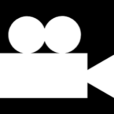

NASA Image Search
Home
Favorites
NASA Image Search
Images
 Videos
Audio
Refine Search
Grid View
List View
Date Range
Start:
End:
Location
Select location...
01726 Hangar S
AFRC
Alabama A&M University
Ames Research Center
Around the USS John P. Murtha
ASOC, Cape Canaveral Air Force S
Bldg. 4663, Payload Operations i
Cape Canaveral, FL
Charles M. Schulz Sonoma County
Cleveland, Ohio
Cmdrs Bldg, Cape Canaveral Air F
CX-5, Cape Canaveral Air Force S
CX17-B, Cape Canaveral Air Force
E&O Building
Edwards, CA, USA
Ernest N. Morial Convention Center\u200e, New Orleans, Louisiana
Europe's space port,CSG,French G
%G
Goddard Space Flight Center
Greenbelt, MD
Hangar M Annex
Hangar N, Kennedy Space Center
Headquarters Building, Kennedy S, FL
HUNTSVILLE, ALABAMA BIG SPRING P
Iwo Jima Memorial
ISS
James E. Webb Auditorium
John F. Kennedy Center for the P
John F. Kennedy International Ai
John P. Murtha
JSC
Kars Park I
Kennedy Space Center
Kennedy Space Center, FL
KSC - O&C, Building S
KSC - Saturn V Facility
Launch Pad facilities, Kennedy S
Lockheed Martin?s Global Vision
MSFC
MSFC, Huntsville,AL
N End of SLF, Kennedy Space Cent, FL
NASA Ames Research Center
NASA Armstrong Flight Research Center, Edwards, CA
NASA Headquarters
NASA HQ, 300 E St. SW
NASA Langley Research Center
NASA Michoud
NASA Resident Office
NASA Stennis Space Center
NOTU Berm, Canaveral Air Force S, FL
O&C
Orbital ATK Propulsion Systems T
Operations Support Building I
OSB I Roof
Pad B, Crawlerway
Reuben H. Fleet Science Center,
Rotation, Processing, and Surge F
Satern V Bldg
Satern V Center
Saturn V Building
Saturn V Facility
SLC-2
Steven F. Udvar-Hazy Center
Training Auditorium
Union Station
USS John P. Murtha
VAB
Vandenberg Air Force Base, CA, USA
Vertical Integration Facility (V
VIF, CX-41, Cape Canaveral Air F
Walter E. Washington Convention
Image Size
Select Size...
Small
Medium
Large
Refine Search
Created by:
Erin Hardnett
Email:
erin.hardnett.7@gmail.com
Phone:
(678) 230-1160
Nasa Image Search
|
March 2018

 Date Range
Date Range Home
Home